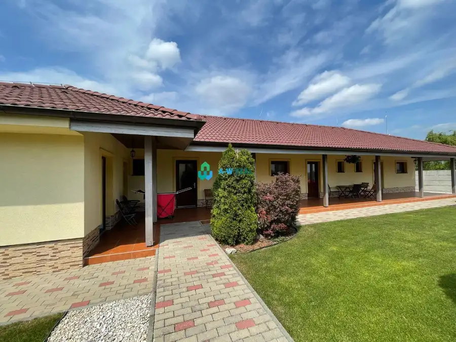
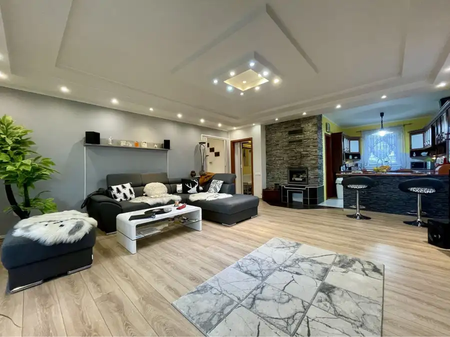

Dunajská Streda – 7-izbový rodinný dom na predaj blízko k termálnemu k
Dunajská Streda
- Dispozícia7-izbový
- Plocha408 m²
- Stavúplne prerobený
- Vlastníctvoosobné
O nehnuteľnosti
Ponúkame Vám na predaj 7 izbový rodinný dom v Dunajskej Streda v tesnej blízkosti Termálneho kúpaliska . Má dve podlažia a je celkom podpivničený. Zastavaná plocha je 124 m2 a má úžitkovú plochu spolu celkom 350 m2. Dom bol celkovo obnovený v roku 2011. V rámci obnovy boli menené okná na plastové , dostal novú strechu s novým odkvapovým systémom. Ďalej bol celkovo zateplený a dostal novú fasádu. Dom je napojený na verejný vodovod, kanalizáciu a plynovod.
Ako dvojpodlažný dom v blízkosti termálneho kúpaliska je vhodný s malou úpravou ako ubytovacia jednotka so samostatnými podlažiami.
Vo dvore sa nachádza budova s viacerými priestormi s celkovou plochou 160 m2. Budova má samostatný prípoj na verejný vodovod a plynovod. Vo dvore sa nachádzajú aj toalety, ktoré sú napojené na verejnú kanalizáciu. Ako samostatná budova je vhodná na rôzne použitie nezávisle od rodinného domu.
DOM
zastavaná plocha: 124 m2
zateplenie
strecha bola vymenená pred 10 rokov
plávajúca podlaha / PVC / dlažba
plastové okná a vchodové dvere
IS – plyn, elektrika, vodovod, kanalizácia
Po vstupe do domu sa dostaneme do predsiene, spojená chodbou. Z chodby je vstup do 3 izieb, do kuchyne so špajzou a do kúpeľne. Na konci chodby sú schody na poschodí, kde sa nachádzajú 4 izby a kúpeľňa.
Kúpeľňa bola kompletne rekonštruovaná, bola vytvorená sprcha a vaňa.
Vo dvore sa nachádza budova, čo je vhodná na podnikanie.
POZEMOK
oplotený
rovinatý
upravený dvor
výmera: 936 m2
IS – elektrina, plyn, vodovod, kanalizácia
OKOLIE
Okresné mesto Dunajská Streda ponúka kompletnú občiansku vybavenosť, ako škôlky, základné a stredné školy, obchody, služby, obchodné centrá, reštaurácie, banky a všetko čo potrebujete. Rodinný dom je blízko, len na skok od Termálneho kúpaliska. Dom je vhodný aj pre tých, ktorí každodenne cestujú do práce do Bratislavy, lebo v blízkosti je spoj na cestu 63. Kúpa nehnuteľnosti môže byť aj dobrá investícia, nakoľko rodinný dom je vhodný aj na bývanie, aj na podnikanie.
Tento skvelý rodinný dom môže byť Váš za 350.000€ vrátane provícii a kvalitného servisu A-W REAL
Ponúkame pre našich klientov v rámci našich služieb:
- Vypracovanie kúpno-predajných zmlúv a návrhu na vklad na kataster nehnuteľností
- Sprostredkovanie poskytnutia úverov
- Sprostredkovanie vypracovania znaleckých posudkov
- Poistenie nehnuteľností (aj k úverom), životné poistenie, poistenie majetku, poistenie vozidiel, poistenie zodpovednosti podnikateľa, cestovné poistenie, atď.
Zodpovedný prístup našich maklérov zaručuje spokojnosť našich klientov.
Parametre
| Rozloha pozemku | 936 m² |
|---|---|
| Zastavaná plocha | 284 m² |
| Úžitková plocha | 408 m² |
| Počet izieb | 7 |
| Vlastníctvo | osobné |
| Stav | úplne prerobený |
| Terasa | áno |
| Dátum zverejnenia | 15. 9. 2026 |
Kde to je
Mohlo by Vás zaujímať
 Hotely a penzióny10
385 000 €Apartmánový dom na predaj blízko termálneho kúpaliska
Veľký Meder
232 m²
Ponúkame Vám na predaj apartmánový dom blízko termálneho kúpaliska vo Veľkom Mederi. V apartmánovom dome sa nachádzajú štyri kompletne zariadené…
Hotely a penzióny10
385 000 €Apartmánový dom na predaj blízko termálneho kúpaliska
Veľký Meder
232 m²
Ponúkame Vám na predaj apartmánový dom blízko termálneho kúpaliska vo Veľkom Mederi. V apartmánovom dome sa nachádzajú štyri kompletne zariadené…

Chaty a chalupy10 385 000 €Apartmánový dom na predaj blízko termálneho kúpaliska Veľký Meder 232 m² Ponúkame Vám na predaj apartmánový dom blízko termálneho kúpaliska vo Veľkom Mederi. V apartmánovom dome sa nachádzajú štyri kompletne zariadené…
Rodinné domy10 255 000 €Vkusný 4-izbový rodinný dom s garážou na predaj v obci Topoľníky Topoľníky 135 m² Ponúkame Vám na predaj vkusný 4-izbový rodinný dom s garážou v obci Topoľníky. Rodinný dom má dobré dispozičné riešenie, denná časť je oddelená od…